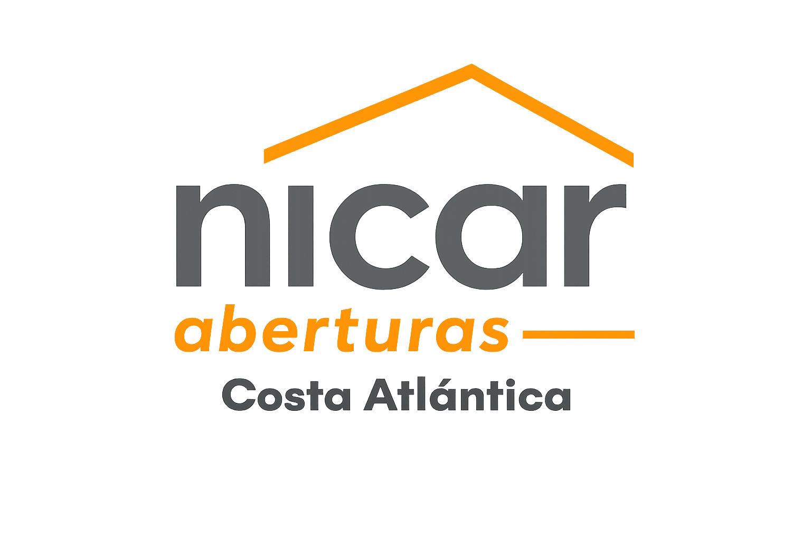
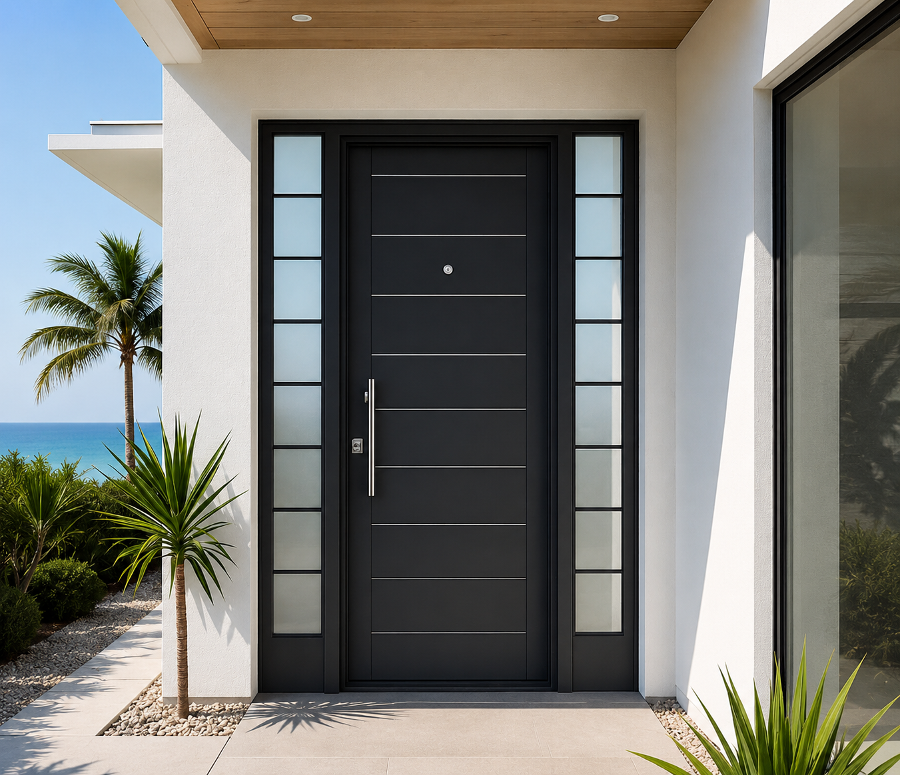

Medidas a pedido
Diseñamos soluciones a medida para viviendas, locales, oficinas y obras en construcción.

Somos una empresa familiar dedicada a la fabricación e instalación de aberturas de aluminio, vidrio y PVC. Desde nuestros comienzos trabajamos con un objetivo claro: entregar productos fuertes, prolijos y adaptados a cada obra.
Con el paso del tiempo incorporamos nuevas líneas, mejores terminaciones y procesos más precisos para acompañar tanto proyectos particulares como comerciales. Cada abertura se fabrica cuidando el diseño, la seguridad y la funcionalidad.
Ver servicios
Diseñamos soluciones a medida para viviendas, locales, oficinas y obras en construcción.
Perfiles de calidad, líneas actuales y detalles cuidados para lograr una estética superior.
Acompañamos el proyecto desde la consulta inicial hasta la colocación final.